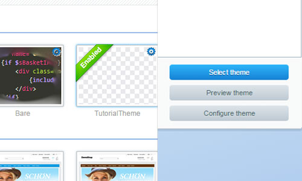

Getting started with Shopware templating
Introduction
This guide will provide you a quick overview on basic templating in Shopware 5 by providing a step by step explanation based on an example project. The content is aimed at beginners and lays the groundwork for templating and styling of Shopware themes. It shows the creation of a new theme and the usage of the Smarty template blocks to customize and add elements to the custom theme.
Preview of the guide

This guide explains how to add a new theme to the shop, implement a new element into the template and add styling by using the CSS pre-processor Less. The first task is to add a new theme and select it. In the second step, we want to add a button into the shop navigation of the frontend and style it correctly, so it fits on any device size. And as a last task we change the color of the cart button to a gradient that matches the default primary colors.
Templating
Bare and responsive
The default template directory of Shopware 5 is the Themes directory in the root directory.
Inside the frontend directory, which is the focus of this guide, you can find our two default Shopware 5 themes.
- The
Baretheme is the base of the Shopware frontend. It contains the basic element structure. - The
Responsivetheme contains the default Shopware 5 Responsive theme styling based on the Bare theme.
Important: Do not change the Bare/Responsive themes themselves, as the changes might be overwritten by future updates.
Custom themes
Creating a theme with the Theme Manager

In order to create your theme, you have to click on the Create theme button inside the Theme manager and give it a suiting name (in this example: TutorialTheme) and some additional information.
It will automatically create a directory inside the themes directory and add the required files for it to work.
The frontend directory now contains 3 themes:
-
Bare -
Responsive -
TutorialTheme
Creating a theme with the Shopware CLI tools
You can also create a new custom theme by using the sw:theme:create CLI command:
sw:theme:create --description="Text" --author="shopware AG" --license="MIT" Responsive TutorialThemeDirectory TutorialTheme
If you need a general introduction regarding the CLI commands you can take a look at our Shopware 5 CLI commands article.
Selecting themes

Before you can see any changes made to the files you are editing, you have to select the new theme. To choose the theme, first refresh the themes using the Refresh themes button and then simply click on the thumbnail image of your own created template and press the Select theme button.
Directory structure
The Shopware directory structure that is located in the Bare/Frontend directory contains subdirectories (named after the controllers) that separate the template files by the specific frontend areas they relate to.
frontend
├── _includes
├── account
├── blog
│ └── comment
├── campaign
├── checkout
│ └── items
├── compare
├── custom
├── detail
│ ├── comment
│ └── tabs
├── error
├── forms
├── home
├── index
├── listing
│ ├── actions
│ ├── filter
│ └── product-box
├── newsletter
├── note
├── paypal
├── plugins
│ ├── compare
│ ├── index
│ ├── notification
│ ├── payment
│ └── seo
├── register
├── robots_txt
├── search
├── sitemap
├── sitemap_xml
└── tellafriend
Template inheritance
While creating the theme you have the ability to choose an existing theme you want to inherit from. In this case you would want to inherit from the responsive theme. In other words, our new theme is based on Shopware's Responsive theme which, in turn, inherits from the Bare theme.
If you want to edit a specific store section inside your new template, you would extend the already existing files that the Bare theme provides. In order to do that, you have to maintain the same directory structure that the Bare theme uses.
So, for instance, if you would like to modify the header, you would want to recreate the specific directory structure in order to be able to overwrite or extend the already existing elements. The frontend header in the shop-navigation.tpl file (which is later included into the index.tpl) is located inside the Frontend/Index directory.
This is how your template directory should look like.
TutorialTheme
├── frontend
│ └── index
│ └── shop-navigation.tpl
Inside your new shop-navigation.tpl file, you will have to extend the Bare theme's default shop-navigation.tpl file by adding a extends function call. this allows you to keep the original elements from the Bare theme's file, but also add other elements and overwrite existing ones.
The file path of the extends function call has to match the directory structure of the Bare theme.
{extends file="parent:frontend/index/shop-navigation.tpl"}
Had we chosen not to use the extends function call, the content of the shop-navigation.tpl file from the inherited theme would be ignored when rendering our theme, and our empty file would be used instead.
You can find a complete guide to the template inheritance in the Smarty 101 guide.
Template blocks
The Bare theme's HTML structure is wrapped in Smarty's block elements. These block elements group the frontend components into small, isolated blocks that can be edited/overwritten individually. To add changes to the elements of the Bare theme, you can't simply write code inside your file. To customize a block, you have to call the correct Shopware block name.
You can override the whole content of an inherited block like this:
{block name='frontend_index_checkout_actions'}
// place your new element here
{/block}
The variable {$smarty.block.parent} contains the content of the inherited block.
So you can use it to add the initial content of the block in your block.
If you wish to add your content after the initial block content you can do it like this:
{block name='frontend_index_checkout_actions'}
{$smarty.block.parent}
// place your new element here
{/block}
Of cause the other way around will also work, if you wish to add your content before the content of the initial block:
{block name='frontend_index_checkout_actions'}
// place your new element here
{$smarty.block.parent}
{/block}
For example, in order to add a new button to your navigation menu, you would search for a fitting block and insert a new element to it, so it displays before or after the already existing buttons inside the shop navigation menu.
{extends file="parent:frontend/index/shop-navigation.tpl"}
{block name='frontend_index_checkout_actions'}
// place your new element here
{$smarty.block.parent}
{/block}
The navigation menu uses <li> elements to wrap its entries. In the example below, an icon is also added to the button.
{extends file="parent:frontend/index/shop-navigation.tpl"}
{block name='frontend_index_checkout_actions'}
<li class="navigation--entry">
<a href="" class="btn starButton"> {* Add an URL to the href attribute to make your link work *}
<i class="icon--star"></i>
</a>
</li>
{$smarty.block.parent}
{/block}
Add Less files
Less files can be added in a similar way to template files. The directory structure has to match the structure of the source files of the Responsive template. The sample directory structure would look like this:
TutorialTheme
├── frontend
│ └── index
│ └── shop-navigation.tpl
│ └── _public
│ └── src
│ └── less
│ └── all.less
To add new Less files, you need to create a new all.less file. This file is required, and should be used exclusively to import other Less files, in which you will define your custom styling. Your custom Less files can be imported by using the @import function on your all.less file. If you have extensive theme changes, it's recommended to adapt the Less file subdirectories of the Responsive theme to have a better overview, but in this case we will just create a new Less file called navigation.less.
//inside the all.less file
@import 'navigation';
The first step is to add some simple styling rules to the new button we just created, so that the icon is centered inside it. Inside the Less files, you are able to use all the Less mixins and variables that Shopware provides (e.g. the unitize mixin, that helps convert px values into relative rem values).
.starButton i.icon--star {
.unitize(font-size, 18);
}
a.btn.starButton {
.unitize(padding-top, 5);
}
Additionally, a few changes have to be made in order for the button to fit completely in the design for mobile devices. To address all problems, the search bar width has to be reduced and the mobile menu text has to be hidden to avoid any element overlapping.
To hide the menu text, take the offcanvas_left_trigger block inside the shop-navigation.tpl file, and overwrite it (without append or prepend) with a new block, without the description inside it.
{block name='frontend_index_offcanvas_left_trigger'}
<li class="navigation--entry entry--menu-left" role="menuitem">
<a class="entry--link entry--trigger btn is--icon-left" href="#offcanvas--left" data-offcanvas="true" data-offCanvasSelector=".sidebar-main">
<i class="icon--menu"></i>
</a>
</li>
{/block}
To change the search bar width, you can overwrite the default media query with the new width percentage.
.starButton i.icon--star {
.unitize(font-size, 18);
}
a.btn.starButton {
.unitize(padding-top, 5);
}
@media screen and (min-width: 30em) {
.entry--search {
width: 30%;
}
}
As the last step, the cart button color needs to be changed. As said before, inside the Less files you have the ability to use all Less mixins and variables that Shopware provides. To create a gradient that matches the default store color you can use the @brand-primary and @brand-primary-light variables together with the .linear-gradient Less mixin. The last step is to change the colors of the icon and price inside the cart button.
.starButton i.icon--star {
.unitize(font-size, 18);
}
a.btn.starButton {
.unitize(padding-top, 5);
}
@media screen and (min-width: 30em) {
.entry--search {
width: 30%;
}
}
@media screen and (min-width: 64em) {
.navigation--list .entry--cart .cart--link .cart--amount {
color: #fff;
}
}
a.btn.is--icon-left.cart--link {
.linear-gradient(@brand-primary-light, @brand-primary);
border-color: @brand-primary;
color: #fff;
}
Result

This guide provided you a simple tutorial on how to do a small template change with the following topics:
- Creating a new theme
- Extending the default theme with a new element
- Adding custom styles to the new theme